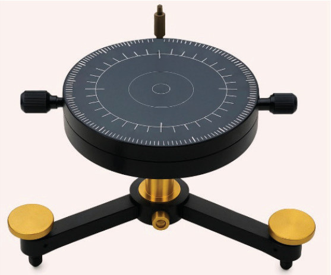

Also, the direction, speed, and type of clouds can be measured using a Nephoscope, as shown in Figure 12. This instrument helps weather experts understand the clouds’ dynamics. It is usually used with other equipment like weather telescopes or aerial cameras.

Figure 12: Nephoscope